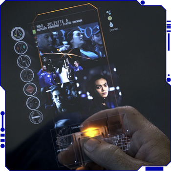

The most often personal technology seen in the series is a toss-up between the Hand Terminal and the Vacuum or "VAC" suit. A VAC suit is a spacesuit worn in vacuums by spacefarers in space, and inhospitable environments. Each nation has its own variants of VAC suit with the United Nations and Martian Congressional Republic militaries having VAC suits incorporated with light armor for their personnel. It is common for companies to provide their staff with VAC suits such as Pur'n'Kleen Water Company having a standardized Canterbury suit. However, many Belters wear their own personal VAC suits with the badges of ships they previously served on.
A VAC suit is a spacesuit worn in vacuums by spacefarers in space, and inhospitable environments. Each nation has its own variants of VAC suit with the United Nations and Martian Congressional Republic militaries having VAC suits incorporated with light armor for their personnel. It is common for companies to provide their staff with VAC suits such as Pur'n'Kleen Water Company having a standardized Canterbury suit. However, many Belters wear their own personal VAC suits with the badges of ships they previously served on.
The hand terminal is the universal personal smart device. It is used for person-to-person recorded video messages and live video calls. It also operates as a personal data manager, a remote control device, and an access control key among other purposes. It is depicted as a solid clear rectangular device which resembles the dimensions of a smartphone from the early 21st century however is made entirely of a glass silicate or a transparent hard glossy plastic/polycarbonate material. The display, user experience, and operating system includes touch, proximal motion, and gesture detection, as well as potentially holographic projection (this may be from nearby devices that communicate in real-time with the hand terminal).